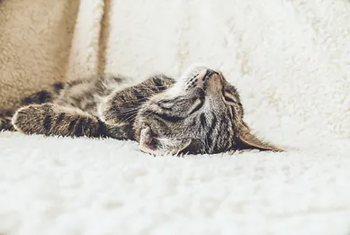
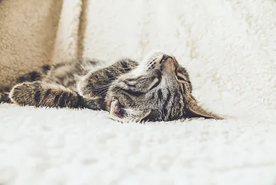
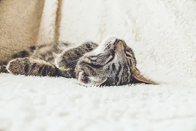

Istoria pisicii începe acum peste nouă mii de ani, undeva în zona Ciprului de astăzi, când se presupune că a avut loc prima interacțiune a omului cu pisica sălbatică, deși domesticirea acesteia s-a petrecut cu mult mai târziu, aproximativ acum patru mii de ani. Tot o presupunere este și aceea că primele pisici domestice au ca strămoș pisica sălbatică africană, rasă domesticită pentru a apăra culturile agricole și sănătatea publică de rozătoare. Șoarecii și șobolanii au ajuns să se împuțineze rapid mulțumită pisicilor, cărora le datorăm chiar reducerea deceselor din cauza bolilor pe care rozătoarele le pot transmite.
Impresionați de determinarea pisicilor de a schimba calitatea vieții oamenilor prin reducerea numărului de rozătoare, egiptenii le-au văzut ca pe niște ființe sacre, pe care au început să le venereze. Ba mai mult, le-au închinat pisicilor nu una, ci trei zeități, cea mai mare dintre acestea fiind Bastet, care era jumătate pisică, jumătate femeie. Aceasta proteja întreg Egiptul. Sekhmet, una dintre cele trei zeități, era reprezentată de o ființă cu trăsături de leu, pe care egiptenii o venerau cu frică. Mai mult decât atât, egiptenii au ales să folosească reprezentarea felină în, poate, cel mai popular simbol al lor, Sfinxul din Giza, o statuie imensă ce îmbină chipul de om cu un corp de pisică, semn că acest animal era văzut ca protector al templelor și a piramidelor, considerate a fi sacre.
Chiar dacă astăzi familia Regală Britanică preferă câinii ca animale de companie, situația nu a stat la fel în trecut. De exemplu, Regina Victoria (1837-1901) a fost chiar încântată să își lase copiii să aibă ca animale de companie pisici, în vreme de Regina Alexandra (regina-mamă între 1910 și 1925), a fost prima care s-a fotografiat oficial cu un pui de pisică în brațe.
Mulți au fost cei care s-au îndrăgostit de pisici, dar puțini au reușit să le scoată din anonimat. Este și cazul Mariei Assunta, care și-a făcut pisicul celebru după ce acesta a devenit cel mai bogat motan din lume. După ce l-a adoptat, salvându-l de pe străduțele Romei, Maria i-a lăsat prin testament moștenire lui Tommaso câteva milioane de euro. Și Abraham Lincoln a ținut morțiș să își scoată pisicile de sub umbra anonimatului, când a decis să le ia cu el atunci când s-a mutat la Casa Albă, fiind primul președinte din istorie care a făcut asta. Tabby a fost, așadar, un motan răsfățat pe cinste. Nu doar noi am avut un prevestitor, pe Nostradamus, ci și pisicile. Oscar a lucrat ca pisică-terapeut într-un centru al unui sanatoriu care trata demența în Rhode Island și avea intuiția de a se așeza lângă bolnavii care urmau să se stingă din viață curând. Medicii aveau astfel ocazia de a anunța familia pacienților, pentru ca aceștia să-și poată lua la revedere.

© Purrfect Land